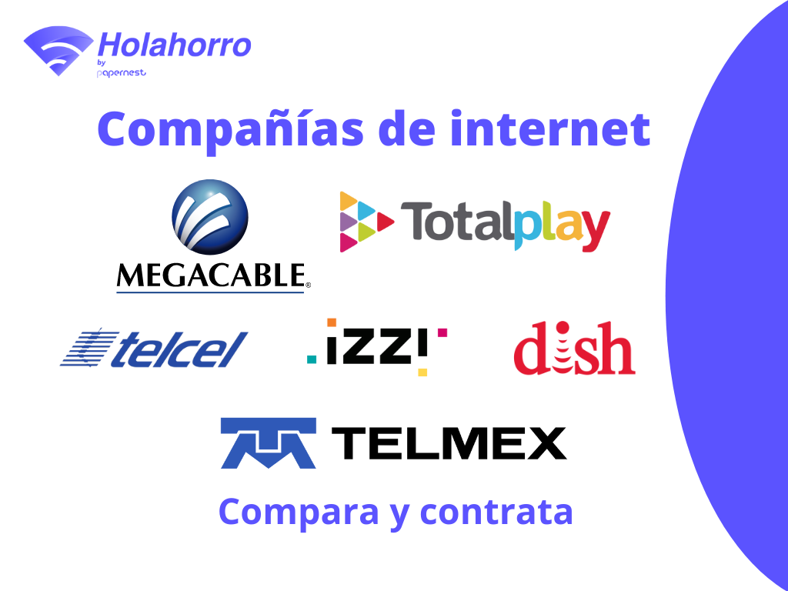
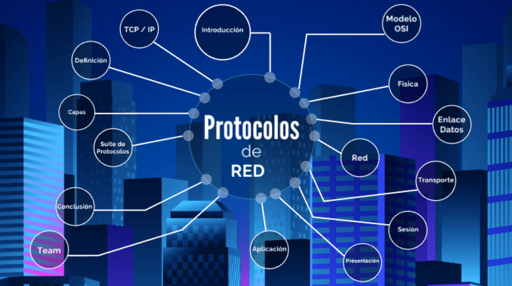
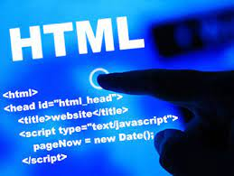
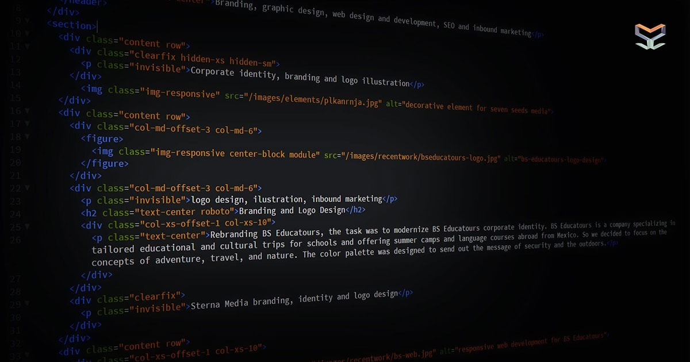

Conceptos básicos de internet
¿Que es el internet?
Internet es una red de computadoras interconectadas a nivel mundial en forma de tela de araña. Consiste de servidores (o "nodos") que proveen información a aproximadamente 100 millones de personas que están conectadas entre ellas a través de las redes de telefonía y cable.

¿Qué son los proveedores de internet?
Los proveedores de servicios de Internet (ISP) son organizaciones que permiten a los clientes acceder y utilizar Internet. Los ISP también suelen ofrecer otros servicios además del acceso a Internet, como servicios de correo electrónico, registro de dominios y alojamiento web.

Tipos de proveedores de internet
¿Cómo se clasifican los proveedores de servicios de Internet?
Los proveedores de servicios de intermediación se pueden clasificar dentro uno de estos tres apartados:
Empresas que brindan conexión a Internet a sus clientes ( ISP )
Prestadores de servicios de alojamiento de datos.
Buscadores y proveedores de enlaces.

¿Qué es la experiencia de usuario?
La experiencia de usuario, también llamada user experience o simplemente UX, se define como el conjunto de factores y elementos relacionados con el proceso de interacción de un usuario respecto a un producto o servicio. A menudo, este concepto se aplica a la interacción con páginas web y aplicaciones.
Como puedes imaginar, dentro del paraguas de la user experience entran muchos elementos diferentes, ya que hay muchísimos factores que influyen en la manera en que percibimos los productos y servicios y nos relacionamos con ellos.
De la misma manera, hay que saber que la experiencia de usuario no es universal, ya que los usuarios reaccionan de maneras diversas en diferentes situaciones y además, en el caso de los contenidos digitales, van a consumirlos desde diferentes dispositivos.

¿Qué es interfaz de usuario?
La interfaz de usuario o UI (User Interface) es un concepto que abarca arquitectura de información, patrones y diferentes elementos visuales que nos permiten interactuar de forma eficaz con sistemas operativos y softwares de diversos dispositivos.
¿Qué son los protocolos de internet?
El Protocolo de Internet (IP) es un conjunto de requisitos para direccionar y enrutar datos en Internet. El IP se puede utilizar con varios protocolos de transporte, como TCP y UDP.

¿Qué es HTML?
HTML es el lenguaje con el que se define el contenido de las páginas web. Básicamente se trata de un conjunto de etiquetas que sirven para definir el texto y otros elementos que compondrán una página web, como imágenes, listas, vídeos, etc.

¿Qué es la semántica en HTML?
La semántica en el HTML y HTML5 se refiere al significado o información extra que otorgan los elementos o etiquetas del lenguaje, información que define o describe el contenido, función o sección que contienen.
Esta información es lo que permite que un documento se pueda rastrear de mejor manera. Ayuda a que el contenido se muestre de manera consistente en diferentes aplicaciones y contextos, además de ser fundamental para otorgar accesibilidad y funcionalidad con tecnología de asistencia como lectores de contenido.
